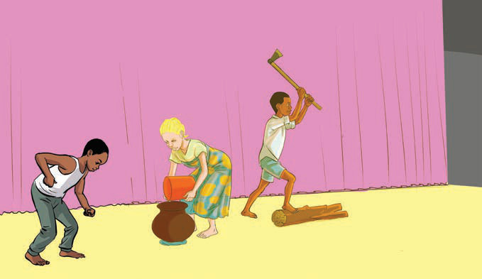

Uigizaji wa vitendo na sauti
Hii ni aina ya uigizaji ambayo hutumia maneno na vitendo kufikisha ujumbe kwa hadhira. Ufanisi wa igizo unategemea sana uwezo wa muigizaji katika kuweka uwiano wa vitendo na sauti. Kielelezo namba 1 kinaonesha wanafunzi wakionyesha igizo jukwaani.
